01
타다아사나 · 산 자세
Tāḍāsana · Samasthiti
개념
- 타다(산): 위로 곧게 뻗는 강하고 웅장한 에너지
- 사마스티티: 균형을 중요하게 보고, 집중력을 높이는 자세. 손은 명치 앞에서 합장
- 두 자세의 정렬은 같은 의미로 통한다
동기 공유용 · 교재 사진이 들어 있어 과정 밖으로는 공유하지 말아 주세요
수리야 나마스카라 A 티칭 실습, 런지 묶음, 센터링, 질의응답, 다음 주 과제
부진 선생님 큐잉을 들으며 직접 동작해 봄 (티칭 실습 아님)
피트니스 GX, 기업 강의, 소그룹, 1:1 등 어디서나 쓸 수 있는 기본 방식. 마음에 대한 긴 이야기가 어울리지 않는 곳이나, 수업 시간이 짧아 특정 주제를 나누기 어려울 때 사용. a~d 순서로 진행
Q. 센터링은 온전히 경험하면서 해야 하는데, 불가피하게 강사의 마음이 잡히지 않을 때는? (예은 선생님)
A. "60분간 아무 일도 일어나지 않는다"
월~금 매일 과제 (토·일은 교육에 집중)
과제마다 ① 녹음·녹화 올리기와 ② 셀프 피드백 남기기를 각각 해야 함 (과제 하나당 2가지)
| 과제 | ① 녹음·녹화해서 올리기 | ② 셀프 피드백 남기기 |
|---|---|---|
| 녹음 1 118~119p | 수리야 나마스카라 A 3세트에 이어서 다리가 앞뒤로 있는 런지 묶음 큐잉 | 잘한 점, 성장한 점 |
| 녹음 2 97p 하단 | 일반 센터링 예시 스크립트 | 잘한 점, 성장한 점 |
| 녹화 1 5분 명상 | 앉아서 들고나는 호흡 느끼기 (숨이 들어오고, 내쉴 때 빠져나가는 것 알아차리기). 타임랩스로 촬영, 얼굴은 안 나와도 됨 | 잘한 점, 성장한 점 (예: 5분간 내 마음이 어떻게 움직였는지 등) |
명상 시간은 앞으로 조금씩 늘려갈 예정
수리야 나마스카라 A 3번째 세트의 견상에서 바로 이어서, 오른쪽 다음 왼쪽 순서로 연습해요. 교재 118~119쪽
이미지를 누르면 크게 볼 수 있어요. 받기 버튼이 안 되면 폰에서는 이미지를 길게 눌러 저장해 주세요.
몸으로 돌아오기, 자연스러운 호흡과 연결하기, 주의를 정돈하기, 의도 세우기 순서로 읽어요. 단계 사이에는 공백을 조금 둬요. 교재 97~98쪽
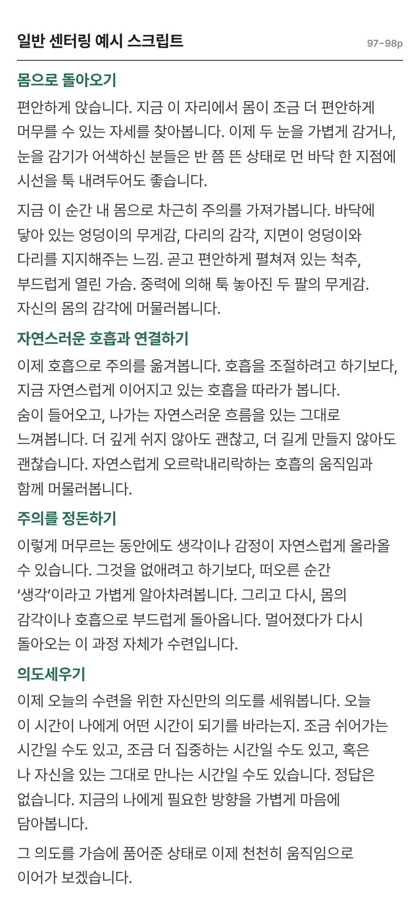
이미지를 누르면 크게 볼 수 있어요. 받기 버튼이 안 되면 폰에서는 이미지를 길게 눌러 저장해 주세요.
자세를 만들게 한 뒤 눈으로 훑고, 줄 곳 하나만 정한다. 한 곳 하고 손을 떼고 빠져나온다. 몸 이곳저곳을 살피며 계속 잡아 주지 않는다.
모든 자세의 기본. 각 자세의 "정렬 포인트"(고개, 갈비뼈 등)는 말로 먼저 잡아 준다. 핸즈온은 골반처럼 말로 잘 안 되는 부분만.
손에 힘이 세면 학생 중심이 흔들린다. 관절은 잡지 않고, 무릎은 절대 손으로 움직이지 않는다 (위치는 말로).
몸의 방향을 알려 주어 감각을 깨운다. 학생이 스스로 알아차리게.
골반 중립과 몸통 정렬이 먼저. 손발 펼치기는 그다음.
근육의 방향을 잡아 주면 뼈가 따라 움직인다.
핸즈온 하는 사람의 서는 위치와 균형감도 함께 챙긴다.
버티고 스스로 고칠 수 있는 사람에게, 감각을 깨우는 용도로.
받는 사람은 손의 그립감 등을 솔직하게 피드백한다.
오른다리로 시작. 한 다리 균형은 왼다리로 서고 오른다리로 움직인다.
초보자에게는 권하지 않는다. 자세를 버틸 수 있고 스스로 고칠 수 있는 사람에게만.
가장 기본이지만, 가장 힘들게 느껴질 수 있는 자세.
중립이 잘 안 잡히면 소·고양이 자세로 골반 움직임을 먼저 느껴 보게 한다.
전사 1의 "골반 정면"은 매트 앞쪽, 전사 2의 골반은 매트의 긴 변을 향한다.
나이 드신 분도 어느 정도 연습할 수 있게 한다.
블록을 어깨 아래에 세우고 양손으로 잡는다. 블록에 체중을 싣지 말고, 밀어서 끌어올리는 느낌으로.
의자 자세(웃카타)에서 이어 간다고 생각하면 쉽다.
블록 2개를 어깨 아래에 나란히 두고 양손으로 짚은 뒤, 한 다리 균형부터 잡는다. 되면 블록 1개만 세우고 그 위에서 반달 자세를 해 본다.
무릎을 많이 구부려서 허벅지 뒤를 잡게 한다.
양손으로 블록을 들고, 내쉬며 팔다리를 함께 낮췄다가 복부 힘으로 다시 올리기를 반복한다.
골반을 맞추면서 척추와 고개를 같이 확인하고, 손을 떼면 빠져나온다. 몸 이곳저곳을 살피며 계속 잡아 주지 않는다.
의자, 전사 1·2·3, 반달, 막대기, 다운독 7개 자세예요.
자세를 고른 뒤 장면 버튼을 누르면 그 장면에서 멈춰 볼 수 있어요.
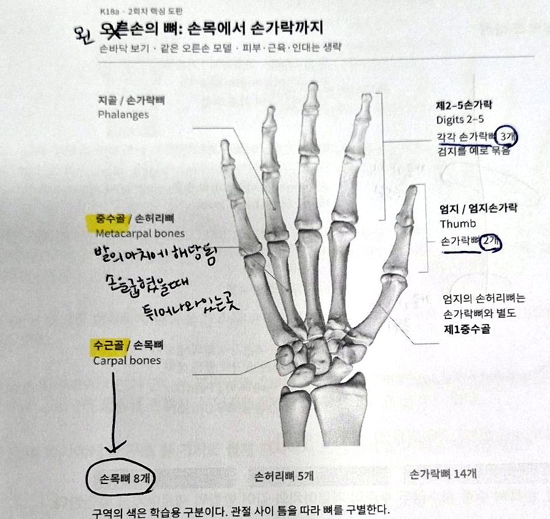
| 뼈 | 위치 | 개수 |
|---|---|---|
| 수근골손목뼈 | 손목 부근의 작은 뼈 | 8개 |
| 중수골손허리뼈 | 손바닥의 길이를 이루는 뼈 | 5개 |
| 지골손가락뼈 | 손가락을 이루는 마디뼈 | 14개엄지 2개, 나머지 각 3개 |
엄지의 손허리뼈(제1중수골)는 손가락뼈 개수에 들어가지 않는다.
참고(교재 밖): 주먹을 쥘 때 튀어나오는 손마디는 중수골의 머리(중수골두)다. 02의 원위 가로아치가 이 높이에 있다.
| 1회차 발과 비교 (1회차 교재) | 발 | 손 |
|---|---|---|
| 뒤쪽 작은 뼈 | 족근골 7개 | 수근골 8개 |
| 가운데 긴 뼈 | 중족골 5개 | 중수골 5개 |
| 발가락·손가락 | 지골 14개 | 지골 14개 |
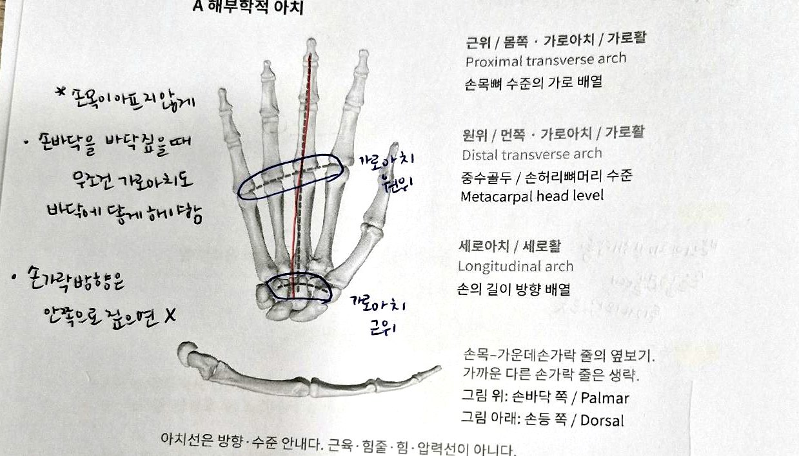
| 근위 가로아치 | 손목뼈 높이의 가로 배열 |
|---|---|
| 원위 가로아치 | 중수골두(손허리뼈머리) 높이의 가로 배열 |
| 세로아치 | 손의 길이 방향 배열 |
이 구조들이 손바닥의 오목한 형태를 이루고, 물체나 지지면에 맞게 손의 형태가 달라지는 데 관여한다.
아치선은 방향과 높이를 안내하는 선이며, 근육·힘줄·힘·압력선이 아니다.
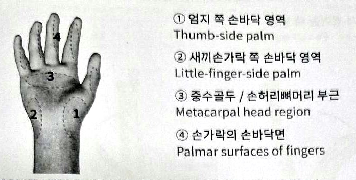
접촉 구역은 해부학적 아치 분류와 다르며, 균등 압력의 네 점이 아니다.
아치는 잡기·지지 과제에 따라 모양을 조절한다. 높은 아치를 고정하는 것이 지지의 목표는 아니다.
실습: 손바닥을 오목하게 했다 놓기, 두 손바닥을 가볍게 맞대기를 비교한다. 모양과 압력의 느낌을 구분한다.
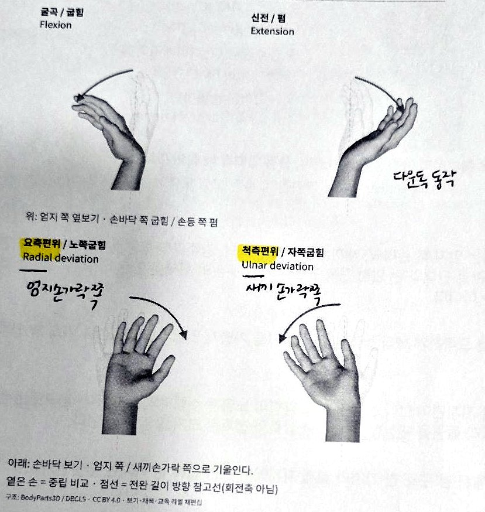
| 움직임 | 교재 설명 | 필기 |
|---|---|---|
| 굴곡굽힘 | 손바닥 쪽으로 손목을 굽힘 | |
| 신전폄 | 손등 쪽으로 손목을 폄 | 다운독 동작 |
| 요측편위노쪽굽힘 | 엄지 쪽으로 손목을 기울임 | 엄지손가락 쪽 |
| 척측편위자쪽굽힘 | 새끼손가락 쪽으로 손목을 기울임 | 새끼손가락 쪽 |
교재 기준: 굴곡은 손바닥 쪽, 신전은 손등 쪽이다. 참고(교재 밖): 필기의 '아래·위'는 손바닥이 바닥을 향할 때 기준이다.
실습: 손가락을 느슨하게 두고 손목 굴신과 편위를 작게 비교한다.
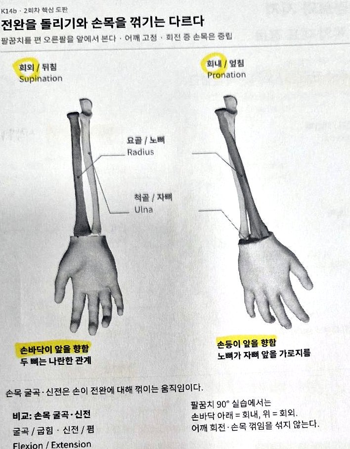
| 요골 (노뼈) | 해부학적 자세에서 전완의 엄지 쪽 뼈 |
|---|---|
| 척골 (자뼈) | 해부학적 자세에서 전완의 새끼손가락 쪽 뼈 |
| 회외 (뒤침) | 손바닥이 앞을 향함. 두 뼈는 나란한 관계 |
| 회내 (엎침) | 손등이 앞을 향함. 노뼈가 자뼈 앞을 가로지름 |
요측 = 노뼈 쪽(엄지 쪽) · 척측 = 자뼈 쪽(새끼 쪽) · 수근 = 손목 · 굴근 = 굽히는 근육 · 신근 = 펴는 근육
→ 요측수근굴근 = 엄지 쪽으로 지나며 손목을 굽히는 근육 / 척측수근신근 = 새끼 쪽으로 지나며 손목을 펴는 근육
| 요측수근굴근 노쪽손목굽힘근 | 척측수근신근 자쪽손목폄근 | |
|---|---|---|
| 위치 | 전완 앞쪽 표층 | 전완 뒤쪽 표층 |
| 기시 | 상완골 내측상과 (위팔뼈 안쪽위관절융기) | 상완골 외측상과 (위팔뼈 가쪽위관절융기)와 척골 뒤모서리 |
| 지나는 곳 | 손목 앞, 손바닥·엄지 쪽 | 손목 뒤, 손등·새끼손가락 쪽 |
| 정지 | 주로 제2중수골 바닥 (손바닥 쪽) | 제5중수골 바닥 |
| 주요 기능 | 손목 굴곡 · 요측편위 | 손목 신전 · 척측편위 |
요측수근굴근은 상완골 내측상과에서 손목 앞을 지나 제2중수골 바닥으로 이어진다.
참고(교재 밖): 1회차 종아리 근육과 같은 원리로, 붙는 곳과 지나가는 길을 함께 보면 기능이 보인다.
신경가동술: 관절이 움직일 때 신경이 주변 조직 사이에서 미끄러지고 늘어나는 능력을 되찾는 데 도움을 주는 기술. 통증 완화, 부종 줄이기에 도움이 될 수 있음.
| 정중신경 | 요골신경 | 척골신경 | |
|---|---|---|---|
| 위치 | 팔꿈치 안쪽 신경 | 외측 팔꿈치 | 새끼손가락 쪽 |
| 도움 | 특히 골프엘보에 도움이 될 수 있음 | 테니스엘보에 도움이 될 수 있음 | |
| 손가락 | 손바닥에서 1, 2, 3번 (엄지~중지) | 손등에서 1, 2, 3번 | 손가락 4, 5번 |
아래 순서는 수업 필기를 바탕으로, 물리치료에서 쓰는 신경 가동 순서(ULNT)에 맞춰 알기 쉽게 정리했다.
표준 순서 참고: 어깨 내리기 → 팔꿈치 펴기 → 팔을 안쪽으로 돌리기(손등이 앞) → 손목을 굽혀 새끼 쪽으로 꺾기 → 엄지 접기
| 자세 | 교재 안내 |
|---|---|
| 벽 밀기 | 몸통은 비교적 세워 두고, 손은 편한 높이에서 벽에 접촉한다. |
| 벽 다운독 | 엉덩이를 뒤로 보내 몸통을 기울인다. 팔과 몸통을 억지로 일직선에 맞추지 않는다. |
| 고정된 높은 지지대 | 고정·미끄럼 방지부터 확인하고, 손바닥을 지지면에 편하게 댄다. |
| 테이블탑 | 손과 무릎의 접촉을 확인한다. 손목과 호흡 반응에 따라 선택한다. |
벽 밀기·벽 다운독, 고정된 높은 지지대·테이블탑은 각각 두 자세 중 편한 자세를 선택한다. 고른 자세 안에서 손 높이·거리·지지 시간 중 하나만 바꾼다. 무릎을 잠그거나 팔꿈치 끝범위를 밀지 않는다. 자세를 바꾼 비교와 같은 자세 안의 조건 비교를 구별한다.
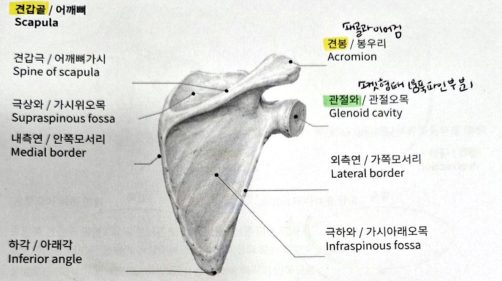
견갑골(어깨뼈)은 흉곽 뒤의 납작한 뼈다. 근육층을 사이에 두고 흉곽을 따라 움직이며, 쇄골과 주변 근육이 함께 팔과 몸통의 관계를 조절한다.
| 내측연 | 척주 쪽 모서리 |
|---|---|
| 외측연 | 겨드랑이 쪽 모서리 |
| 하각 | 견갑골 아래쪽 끝 |
| 견갑극 | 견갑골 뒤면을 가르는 융기. 위아래 오목이 극상와·극하와 |
| 견봉 | 견갑극에서 가쪽으로 이어지는 돌출부 |
| 관절와 | 상완골두와 만나는 가쪽의 얕은 오목 |
요가블록을 양쪽 전완 사이에 끼우고, 무릎을 띄운 네발기기 자세로 해도 좋음
참고(교재 밖, 09·10과 연결): 네발기기에서 바닥을 밀어 날개뼈가 벌어지는 것이 전인, 가슴이 내려가며 날개뼈가 모이는 것이 후인이다(09). 전인의 대표 근육이 전거근이다(10).
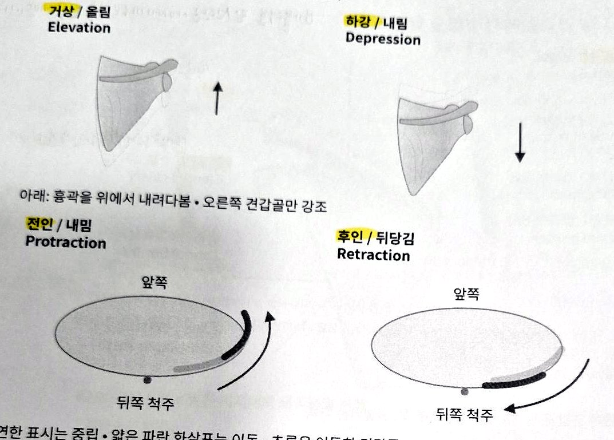
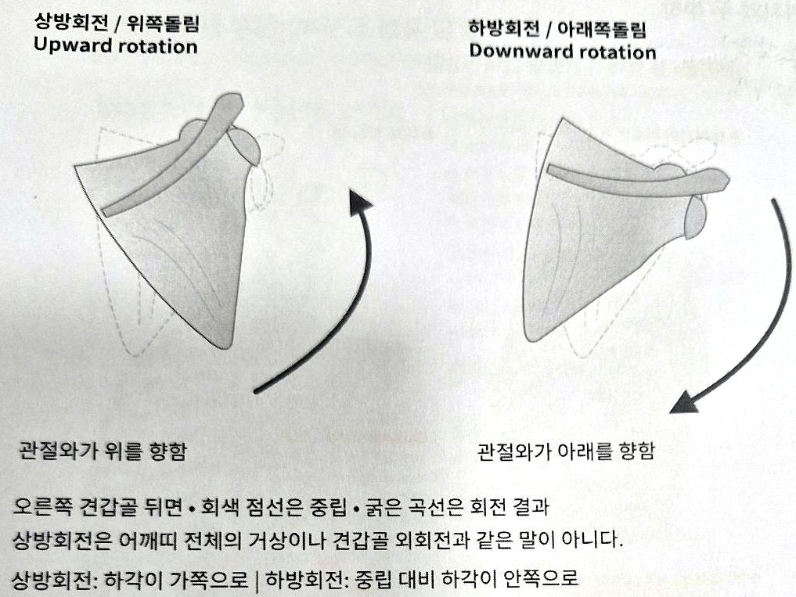
| 움직임 | 무엇이 달라지나 |
|---|---|
| 거상 / 하강 | 어깨띠가 위로 / 아래로 이동 (높이 변화) |
| 전인 (내밈) | 견갑골이 흉곽을 따라 앞·가쪽으로 이동. 내측연이 척주에서 멀어지는 경향 |
| 후인 (뒤당김) | 견갑골이 흉곽을 따라 뒤·안쪽으로 이동. 내측연이 척주에 가까워지는 경향 |
| 상방회전 | 관절와가 더 위를 향하도록 회전. 하각은 가쪽으로 이동하는 성분 |
| 하방회전 | 관절와가 상대적으로 아래를 향하는 반대 회전. 중립 대비 하각이 안쪽으로 |
전인·후인은 흉곽의 곡면을 따라 움직이며 단순한 수평 이동과 다르다. 상방회전은 어깨띠 전체의 거상이나 견갑골 외회전과 같은 말이 아니다.
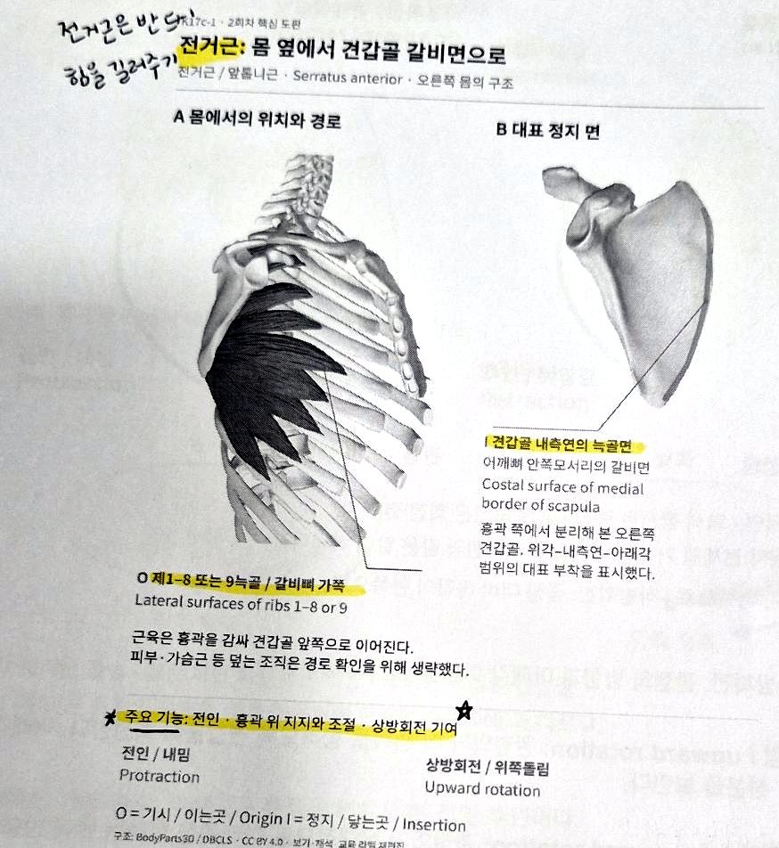
전거근(앞톱니근)은 흉곽 가쪽을 덮고 견갑골과 흉곽 사이로 이어진다.
| 기시 | 제1~8 또는 9갈비뼈의 바깥쪽 면 |
|---|---|
| 정지 | 견갑골 내측연의 늑골면(갈비면). 위각부터 아래각까지 붙으며, 등에서 보이는 뒷면 한가운데에 붙는 것이 아니다 |
| 기능 | ★ 전인 · 흉곽 위 지지와 조절 · 상방회전 기여 ★ |
특히 아래쪽 섬유가 아래각 부근에 전달하는 힘이 회전 협력에 중요하다. 벽을 밀 때 견갑골이 흉곽을 따라 이동하는 움직임과 팔을 올릴 때의 회전을 비교한다. 전거근은 견갑골의 지지뿐 아니라 이동과 회전에도 관여한다.
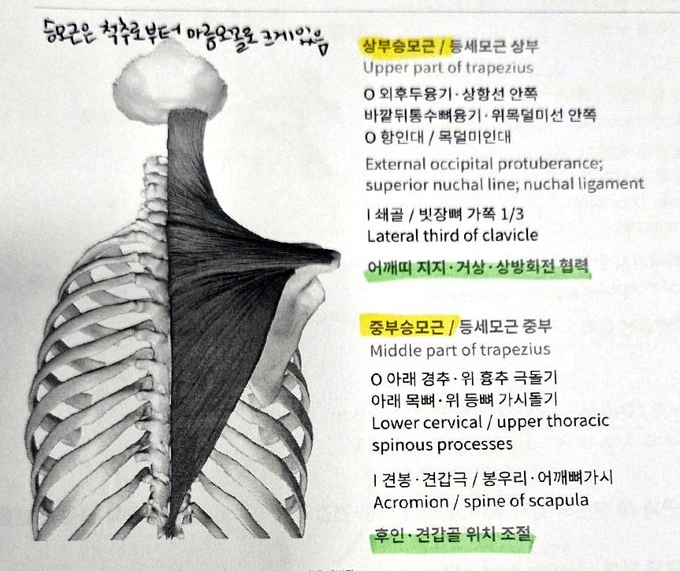
승모근(등세모근)은 목 뒤와 등 위쪽의 넓은 표층 근육이다. 상부·중부·하부는 이어진 한 근육의 서로 다른 섬유 방향을 구분한 것이다.
| 부분 | 기시 | 정지 | 기능 |
|---|---|---|---|
| 상부 | 외후두융기·상항선 안쪽·항인대 | 쇄골 가쪽 1/3 | 어깨띠 지지·거상·상방회전 협력. 팔 올림에서 자연스럽게 참여할 수 있으므로 어깨를 무조건 낮추도록 안내하지 않는다 |
| 중부 | 아래 경추·위 흉추 가시돌기 부근 | 견봉·견갑극 | 후인·견갑골 위치 조절. 팔 올림에서도 다른 근육의 당김과 균형 |
| 하부 | 중간·아래 흉추 가시돌기 부근 | 견갑극 안쪽 끝 부근 | 하강·후인을 도울 수 있음. 팔 올림에서는 전거근 등과 상방회전에 협력 |
하부 섬유는 아래 등에서 위·가쪽으로 올라가 정지에 닿지만, 견갑골에 전달되는 당김은 정지에서 기시 쪽인 안쪽·아래쪽 성분을 가진다. 섬유 경로를 따라가는 방향과 뼈에 작용하는 당김 방향은 같지 않다.
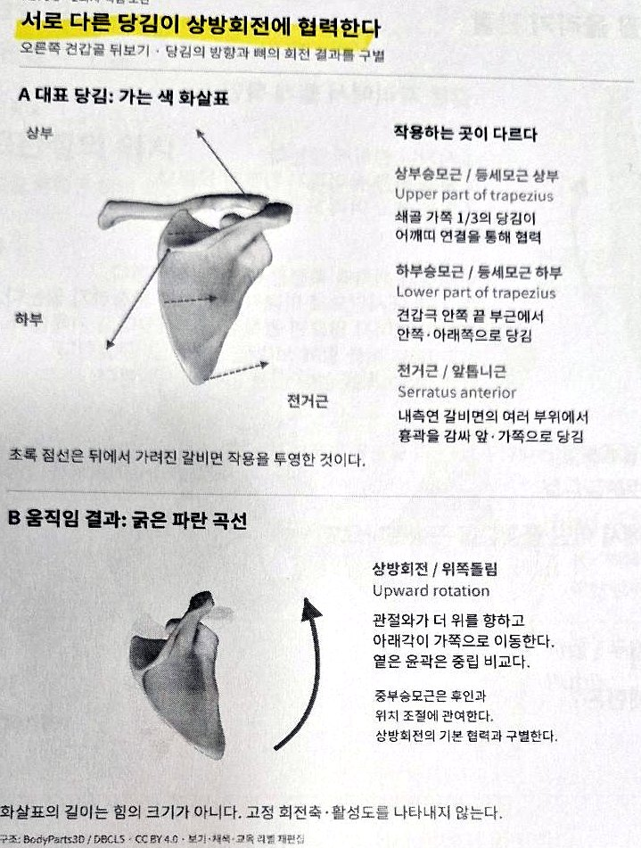
| 상부승모근 | 쇄골 가쪽 1/3의 당김이 어깨띠 연결을 통해 협력 |
|---|---|
| 하부승모근 | 견갑극 안쪽 끝 부근에서 안쪽·아래쪽으로 당김 |
| 전거근 | 내측연 갈비면의 여러 부위에서 흉곽을 감싸 앞·가쪽으로 당김 |
서로 다른 지점에 작용하는 힘이 단순한 위아래 이동과 다른 회전 결과를 만들 수 있다. 이 협력을 힘의 짝(force couple)으로 이해한다. 힘의 크기가 항상 같거나 회전축이 고정되어 있다는 뜻은 아니다.
협력이 같은 방향이라는 뜻은 아니다.
상방회전에서는 먼저 전거근·상부승모근·하부승모근의 협력을 확인한다. 중부승모근은 후인과 위치 조절로 구별한다. 실제 팔 올림에는 상완골·쇄골·견갑골의 여러 움직임이 함께 일어난다.
1회차는 발에서 무릎, 허벅지로 올라갔고, 2회차는 손에서 손목, 어깨뼈로 올라간다. 보는 방법은 같다.
손목뼈 8·손허리뼈 5·손가락뼈 14. 세 아치가 손바닥의 오목한 형태를 만들고, 바닥을 짚을 때는 접촉 구역을 관찰한다. 발에서 배운 구조를 손에서 다시 본다.
요약 01~03 · 교재 174~176쪽
손목은 굴곡·신전·요측편위·척측편위로 꺾이고, 전완은 회내·회외로 돌아간다. 꺾기와 돌리기는 다른 움직임이다.
요약 04~05 · 교재 176~178쪽
팔꿈치 안쪽에서 시작해 손목 앞·엄지 쪽을 지나면 굽히고 엄지 쪽으로 기울인다. 바깥쪽에서 손등·새끼 쪽을 지나면 펴고 새끼 쪽으로 기울인다.
요약 06 · 교재 179~180쪽
한 자세 안에서 조건 하나만 바꿔 손·손목 반응을 본다. 수업에서는 신경가동술(정중·요골·척골신경)도 함께 배웠다.
요약 07 · 교재 181쪽
견봉·관절와·내측연·하각으로 방향을 잡고, 거상·하강·전인·후인(이동)과 상방·하방회전(회전)을 구별한다.
요약 08~09 · 교재 182~184쪽
전거근은 전인과 지지, 승모근은 부분마다 정지와 역할이 다르다. 서로 다른 방향의 당김이 함께 상방회전에 협력한다(힘의 짝).
요약 10~12 · 교재 185~188쪽
어떤 구조인가? → 힘이 어떻게 전달되나? → 어떻게 움직이고 버티나?
손을 바닥에 짚는 자세(다운독, 테이블탑, 푸시업)에서는 손의 아치와 접촉, 손목의 꺾임, 견갑골의 지지가 함께 일한다.